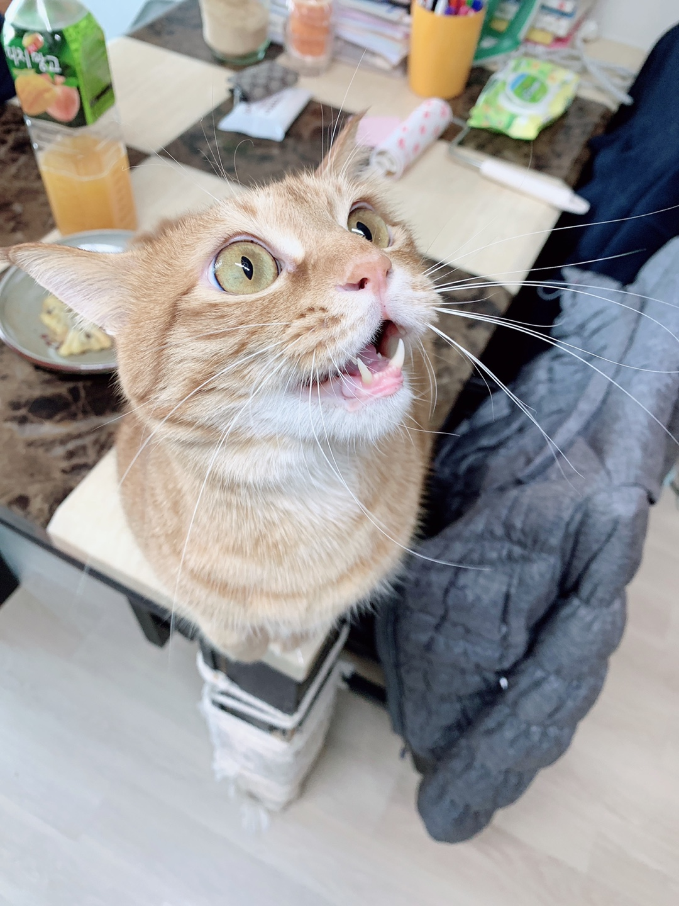

My home cat Homie is so cute. Why is it so cute? I have a cat, you have no cat. I'm going to make a family homepage using Homi's photos.
The moment you step into Rehberger’s latest solo exhibition, “Truths that would be maddening without love” at Gallery Baton, central Seoul, it begins. Visitors must open five doors (wearing a latex glove provided by the gallery to prevent the spread of the coronavirus) to reach the highlight of the exhibition at the end of the hall, but they’re not just there for kicks. On each door are graphics that read, “Something Else is Possible,” while the walls are covered with photographs of an object that’s zoomed in heavily, and a scenery shot that’s similarly zoomed out.